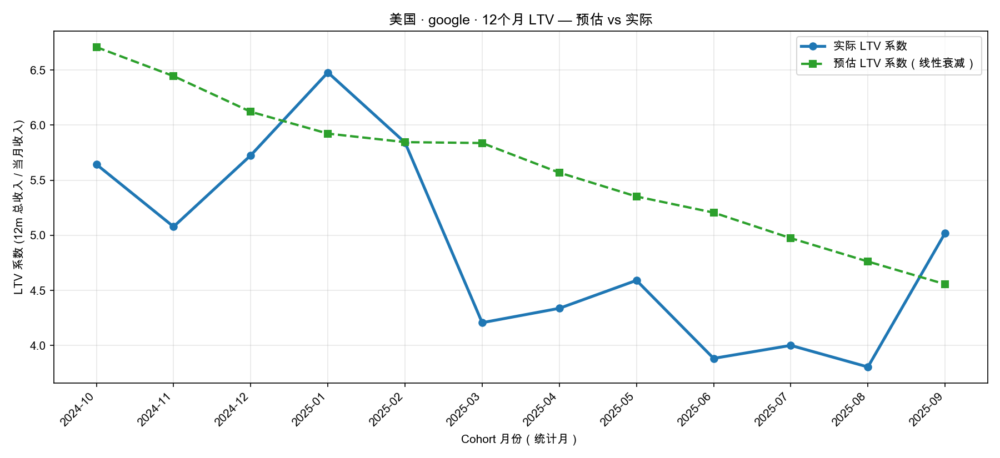
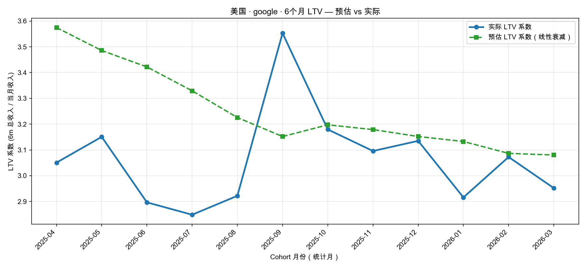
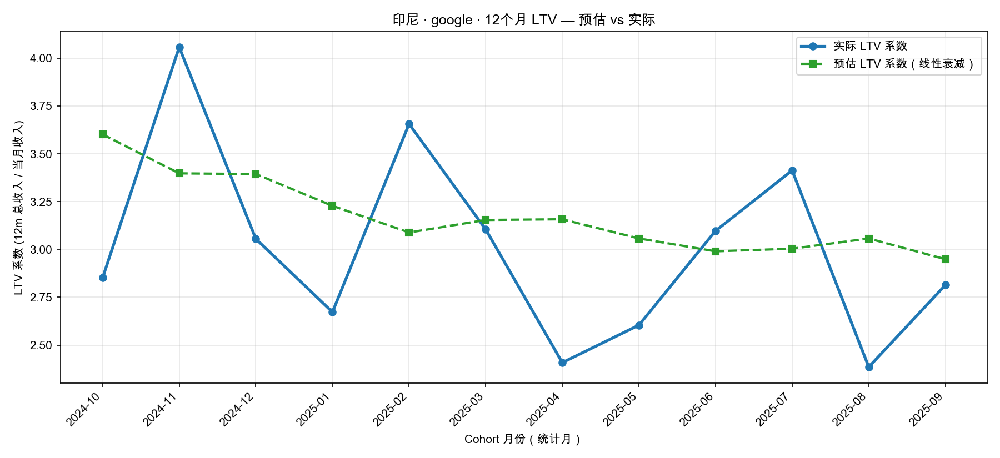
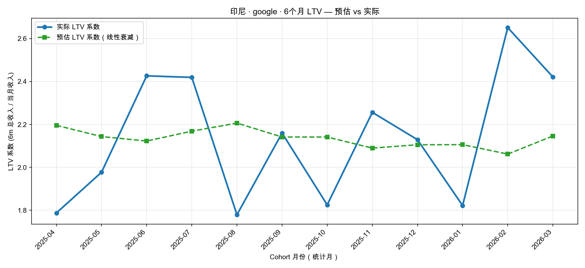
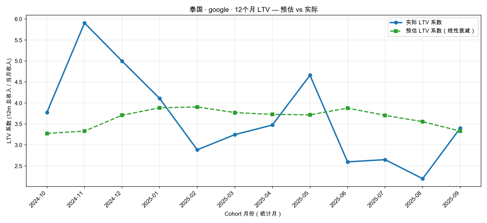
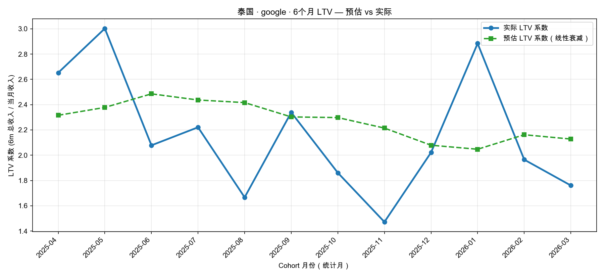

| 国家 | 12m MAPE | 6m MAPE | 12m 平均偏差 | 6m 平均偏差 |
|---|---|---|---|---|
| 美国 | 19.8% | 8.4% | +16.9% | +6.5% |
| 印尼 | 15.7% | 12.8% | +7.8% | +1.9% |
| 泰国 | 26.7% | 20.5% | +8.3% | +9.8% |
口径说明
MAPE（平均绝对百分比误差） = 各月 |预估值 − 实际值| ÷ 实际值 的平均值。只反映「差多少」，不区分偏高还是偏低。数值越小，预估越准。例如 MAPE 8.4% 表示平均大约差 8%。
平均偏差 = 各月 (预估值 − 实际值) ÷ 实际值 的平均值，带正负号。正数（如 +17%）表示整体高估；负数表示整体低估；接近 0 表示无明显系统性偏移。与 MAPE 配合看：MAPE 看误差大小，平均偏差看偏向哪边。
对比窗口：2024-10 ~ 2025-09 ｜ MAPE：19.8% ｜ 平均偏差：+16.9%

| Cohort月 | 实际系数 | 预估系数 | 差异 |
|---|---|---|---|
| 2024-10 | 5.64 | 6.71 | +18.9% |
| 2024-11 | 5.08 | 6.44 | +26.9% |
| 2024-12 | 5.73 | 6.12 | +6.9% |
| 2025-01 | 6.48 | 5.92 | -8.6% |
| 2025-02 | 5.84 | 5.85 | +0.1% |
| 2025-03 | 4.21 | 5.84 | +38.8% |
| 2025-04 | 4.34 | 5.57 | +28.4% |
| 2025-05 | 4.59 | 5.35 | +16.6% |
| 2025-06 | 3.88 | 5.21 | +34.1% |
| 2025-07 | 4.00 | 4.97 | +24.3% |
| 2025-08 | 3.80 | 4.76 | +25.2% |
| 2025-09 | 5.02 | 4.56 | -9.2% |
对比窗口：2025-04 ~ 2026-03 ｜ MAPE：8.4% ｜ 平均偏差：+6.5%

| Cohort月 | 实际系数 | 预估系数 | 差异 |
|---|---|---|---|
| 2025-04 | 3.05 | 3.57 | +17.2% |
| 2025-05 | 3.15 | 3.49 | +10.6% |
| 2025-06 | 2.90 | 3.42 | +18.1% |
| 2025-07 | 2.85 | 3.33 | +16.9% |
| 2025-08 | 2.92 | 3.23 | +10.4% |
| 2025-09 | 3.55 | 3.15 | -11.3% |
| 2025-10 | 3.18 | 3.20 | +0.6% |
| 2025-11 | 3.10 | 3.18 | +2.7% |
| 2025-12 | 3.14 | 3.15 | +0.5% |
| 2026-01 | 2.92 | 3.13 | +7.4% |
| 2026-02 | 3.07 | 3.09 | +0.5% |
| 2026-03 | 2.95 | 3.08 | +4.4% |
对比窗口：2024-10 ~ 2025-09 ｜ MAPE：15.7% ｜ 平均偏差：+7.8%

| Cohort月 | 实际系数 | 预估系数 | 差异 |
|---|---|---|---|
| 2024-10 | 2.85 | 3.60 | +26.3% |
| 2024-11 | 4.06 | 3.40 | -16.3% |
| 2024-12 | 3.06 | 3.39 | +11.1% |
| 2025-01 | 2.67 | 3.23 | +20.8% |
| 2025-02 | 3.66 | 3.09 | -15.5% |
| 2025-03 | 3.10 | 3.15 | +1.6% |
| 2025-04 | 2.41 | 3.16 | +31.1% |
| 2025-05 | 2.60 | 3.06 | +17.4% |
| 2025-06 | 3.10 | 2.99 | -3.5% |
| 2025-07 | 3.41 | 3.00 | -12.0% |
| 2025-08 | 2.39 | 3.06 | +28.2% |
| 2025-09 | 2.81 | 2.95 | +4.8% |
对比窗口：2025-04 ~ 2026-03 ｜ MAPE：12.8% ｜ 平均偏差：+1.9%

| Cohort月 | 实际系数 | 预估系数 | 差异 |
|---|---|---|---|
| 2025-04 | 1.79 | 2.20 | +22.8% |
| 2025-05 | 1.98 | 2.14 | +8.4% |
| 2025-06 | 2.43 | 2.12 | -12.5% |
| 2025-07 | 2.42 | 2.17 | -10.4% |
| 2025-08 | 1.78 | 2.21 | +24.0% |
| 2025-09 | 2.16 | 2.14 | -0.9% |
| 2025-10 | 1.83 | 2.14 | +17.3% |
| 2025-11 | 2.26 | 2.09 | -7.4% |
| 2025-12 | 2.13 | 2.11 | -1.1% |
| 2026-01 | 1.82 | 2.11 | +15.6% |
| 2026-02 | 2.65 | 2.06 | -22.2% |
| 2026-03 | 2.42 | 2.15 | -11.4% |
对比窗口：2024-10 ~ 2025-09 ｜ MAPE：26.7% ｜ 平均偏差：+8.3%

| Cohort月 | 实际系数 | 预估系数 | 差异 |
|---|---|---|---|
| 2024-10 | 3.78 | 3.28 | -13.3% |
| 2024-11 | 5.91 | 3.33 | -43.6% |
| 2024-12 | 5.00 | 3.71 | -25.8% |
| 2025-01 | 4.11 | 3.88 | -5.4% |
| 2025-02 | 2.89 | 3.91 | +35.4% |
| 2025-03 | 3.25 | 3.77 | +16.1% |
| 2025-04 | 3.48 | 3.73 | +7.3% |
| 2025-05 | 4.66 | 3.72 | -20.2% |
| 2025-06 | 2.60 | 3.88 | +49.3% |
| 2025-07 | 2.65 | 3.71 | +39.8% |
| 2025-08 | 2.20 | 3.56 | +61.8% |
| 2025-09 | 3.40 | 3.33 | -2.1% |
对比窗口：2025-04 ~ 2026-03 ｜ MAPE：20.5% ｜ 平均偏差：+9.8%

| Cohort月 | 实际系数 | 预估系数 | 差异 |
|---|---|---|---|
| 2025-04 | 2.65 | 2.32 | -12.7% |
| 2025-05 | 3.00 | 2.38 | -20.8% |
| 2025-06 | 2.08 | 2.49 | +19.6% |
| 2025-07 | 2.22 | 2.44 | +9.7% |
| 2025-08 | 1.67 | 2.42 | +45.0% |
| 2025-09 | 2.34 | 2.30 | -1.5% |
| 2025-10 | 1.86 | 2.30 | +23.5% |
| 2025-11 | 1.47 | 2.21 | +50.4% |
| 2025-12 | 2.02 | 2.08 | +2.9% |
| 2026-01 | 2.88 | 2.05 | -29.0% |
| 2026-02 | 1.96 | 2.16 | +10.0% |
| 2026-03 | 1.76 | 2.13 | +20.9% |